Ensayo 3
Principal component analysis
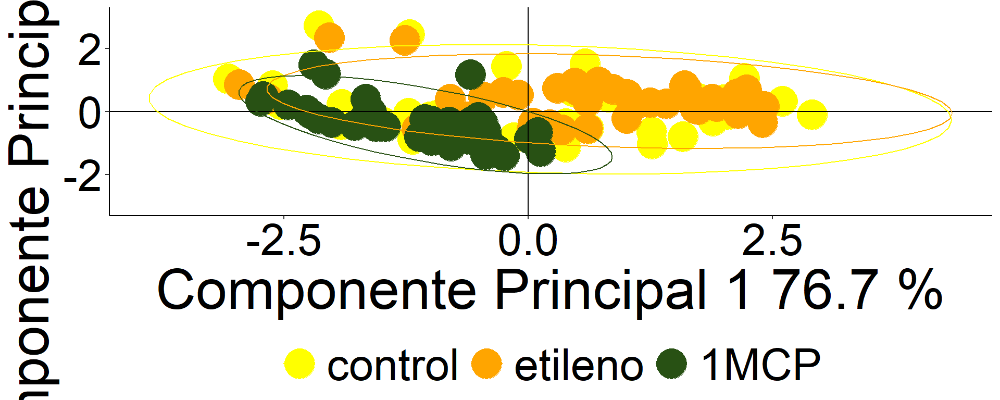
Univariate analysis for the color component Lab
Descriptive table for principal color component
| treat | mean | min | max | sd |
|---|---|---|---|---|
| control | 105.65361 | 65.21946 | 139.9356 | 20.813732 |
| etileno | 113.83946 | 66.92551 | 133.8905 | 17.623015 |
| 1MCP | 87.11768 | 68.07181 | 102.2095 | 8.693992 |
Higher values indicate more advanced stages of maturation
Descriptive graphic (sd)

The model
## gls(model = (color_G) ~ treat, data = data_color_G, weights = varIdent(form = ~1 |
## treat))Assumptions check
##
## Shapiro-Wilk normality test
##
## data: e
## W = 0.97782, p-value = 0.01945Descriptive graphic (sd)
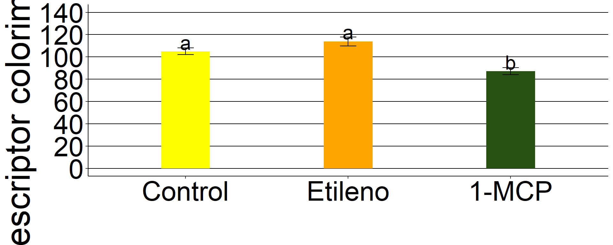
Anova (comparison of means)
| numDF | F-value | p-value | |
|---|---|---|---|
| (Intercept) | 1 | 7953.45532 | 0 |
| treat | 2 | 52.98003 | 0 |
Dunnett test
##
## Dunnett's test for comparing several treatments with a control :
## 95% family-wise confidence level
##
## $control
## diff lwr.ci upr.ci pval
## etileno-control 8.185849 0.6477794 15.72392 0.0309 *
## 1MCP-control -18.535931 -26.0740008 -10.99786 3.5e-07 ***
##
## ---
## Signif. codes: 0 '***' 0.001 '**' 0.01 '*' 0.05 '.' 0.1 ' ' 1Tukey test
## $emmeans
## treat emmean SE df lower.CL upper.CL
## control 105.65361 3.004205 46.82 99.60933 111.69790
## etileno 113.83946 2.543663 46.77 108.72161 118.95731
## 1MCP 87.11768 1.254869 46.99 84.59320 89.64216
##
## Degrees-of-freedom method: satterthwaite
## Results are given on the ( (not the response) scale.
## Confidence level used: 0.95
##
## $contrasts
## contrast estimate SE df t.ratio p.value
## control - etileno -8.185849 3.936428 91.50 -2.080 0.0998
## control - 1MCP 18.535931 3.255755 62.68 5.693 <.0001
## etileno - 1MCP 26.721780 2.836357 68.30 9.421 <.0001
##
## Note: contrasts are still on the ( scale
## Degrees-of-freedom method: satterthwaite
## P value adjustment: tukey method for comparing a family of 3 estimatesLab coordinates Correlations
a vs. L
## [1] 0.4976484a vs. b
## [1] 0.63936L vs. b
## [1] 0.8218299Color correlation
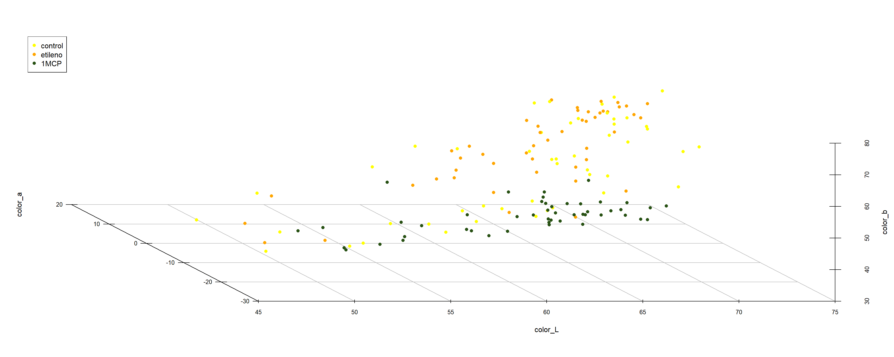
Discriminant Analysis
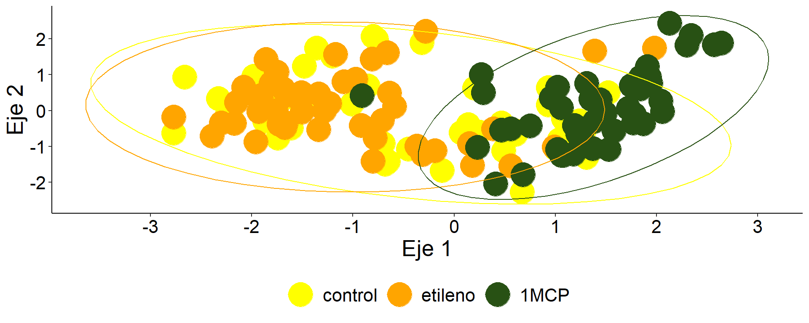
Multiple Response Permutation Procedure (MRPP)
##
## Call:
## mrpp(dat = datos, grouping = grp, permutations = 999, distance = "bray", weight.type = 1)
##
## Dissimilarity index: bray
## Weights for groups: n
##
## Class means and counts:
##
## 1 2 3
## delta 0.1393 0.1047 0.08688
## n 48 48 48
##
## Chance corrected within-group agreement A: 0.1754
## Based on observed delta 0.1103 and expected delta 0.1338
##
## Significance of delta: 0.001
## Permutation: free
## Number of permutations: 999Primer análisis
Colorimetry
*L color
Filter data n=50
Descriptive table for fresh_weight
## mean min max sd
## 1 63.8262 48.07935 73.52477 6.064269Descriptive graphic (sd)
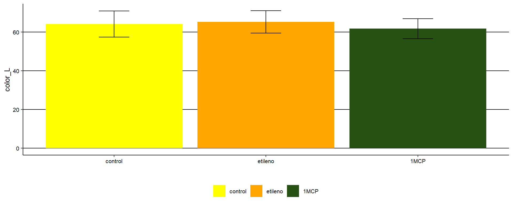
The model
Assumptions check
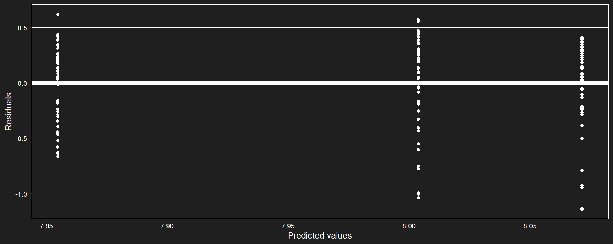
##
## Shapiro-Wilk normality test
##
## data: e
## W = 0.92145, p-value = 4.187e-07Anova (comparison of means)
## Denom. DF: 141
## numDF F-value p-value
## (Intercept) 1 67413.82 <.0001
## treat 2 3.95 0.0214Dunnett test
##
## Dunnett's test for comparing several treatments with a control :
## 95% family-wise confidence level
##
## $control
## diff lwr.ci upr.ci pval
## etileno-control 1.213525 -1.506539 3.9335901 0.5058
## 1MCP-control -1.949974 -4.670038 0.7700908 0.1939
##
## ---
## Signif. codes: 0 '***' 0.001 '**' 0.01 '*' 0.05 '.' 0.1 ' ' 1## $emmeans
## treat emmean SE df lower.CL upper.CL
## control 7.992403 0.06410974 47.16 7.863443 8.121363
## etileno 8.071537 0.05369191 46.66 7.963502 8.179573
## 1MCP 7.875414 0.04602403 47.42 7.782848 7.967981
##
## Degrees-of-freedom method: satterthwaite
## Results are given on the sqrt (not the response) scale.
## Confidence level used: 0.95
##
## $contrasts
## contrast estimate SE df t.ratio p.value
## control - etileno -0.07913411 0.08362344 91.74 -0.946 0.6125
## control - 1MCP 0.11698880 0.07891939 84.99 1.482 0.3044
## etileno - 1MCP 0.19612291 0.07071798 91.78 2.773 0.0183
##
## Note: contrasts are still on the sqrt scale
## Degrees-of-freedom method: satterthwaite
## P value adjustment: tukey method for comparing a family of 3 estimates
Color +
Filter data n=50
Descriptive table for fresh_weight
## mean min max sd
## 1 102.4699 65.21946 139.9356 19.70466Descriptive graphic (sd)
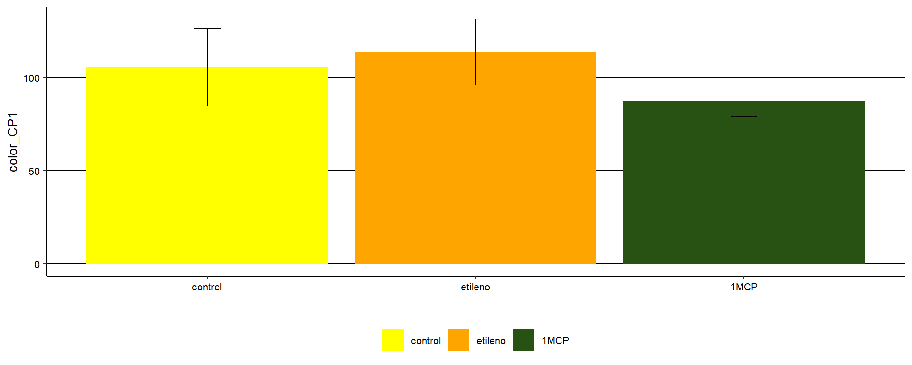
The model
Assumptions check
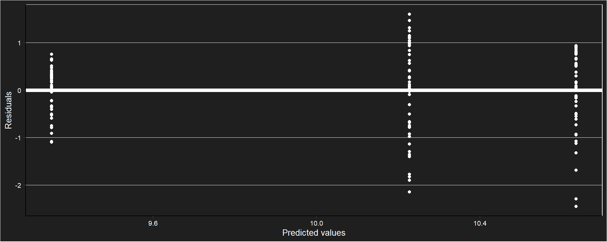
##
## Shapiro-Wilk normality test
##
## data: e
## W = 0.96482, p-value = 0.000938Anova (comparison of means)
## Denom. DF: 141
## numDF F-value p-value
## (Intercept) 1 31413.761 <.0001
## treat 2 47.615 <.0001Dunnett test
##
## Dunnett's test for comparing several treatments with a control :
## 95% family-wise confidence level
##
## $control
## diff lwr.ci upr.ci pval
## etileno-control 8.046681 0.5167858 15.57658 0.0342 *
## 1MCP-control -18.015218 -25.5451128 -10.48532 7.1e-07 ***
##
## ---
## Signif. codes: 0 '***' 0.001 '**' 0.01 '*' 0.05 '.' 0.1 ' ' 1## $emmeans
## treat emmean SE df lower.CL upper.CL
## control 10.23425 0.14967849 47.15 9.933156 10.535335
## etileno 10.63543 0.12437782 46.95 10.385209 10.885654
## 1MCP 9.35771 0.06697407 47.00 9.222976 9.492445
##
## Degrees-of-freedom method: satterthwaite
## Results are given on the sqrt (not the response) scale.
## Confidence level used: 0.95
##
## $contrasts
## contrast estimate SE df t.ratio p.value
## control - etileno -0.4011857 0.1946111 91.09 -2.061 0.1037
## control - 1MCP 0.8765353 0.1639792 65.27 5.345 <.0001
## etileno - 1MCP 1.2777209 0.1412635 72.10 9.045 <.0001
##
## Note: contrasts are still on the sqrt scale
## Degrees-of-freedom method: satterthwaite
## P value adjustment: tukey method for comparing a family of 3 estimates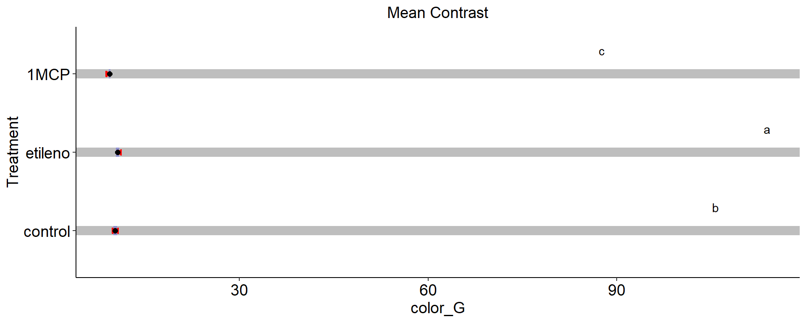
Descriptive graphic (sd)
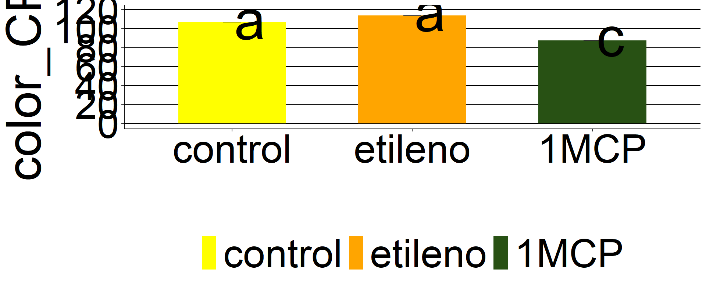
Color correlation
Correlation
## [1] 0.4801602## [1] 0.6423858## [1] 0.8000895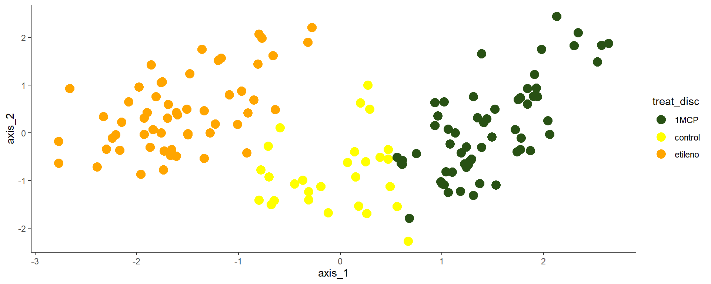
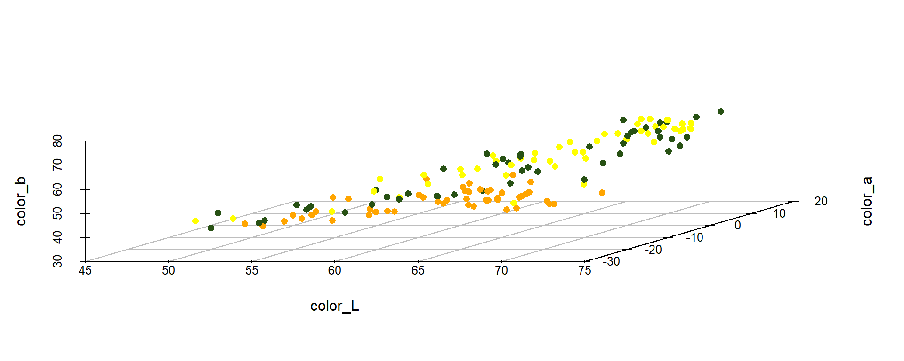